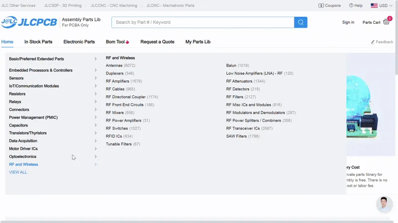
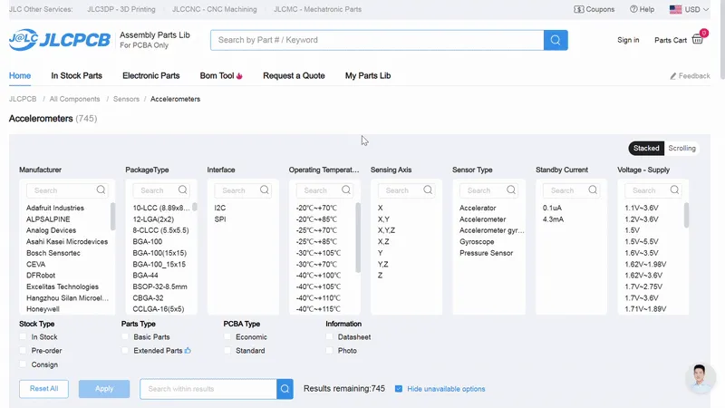
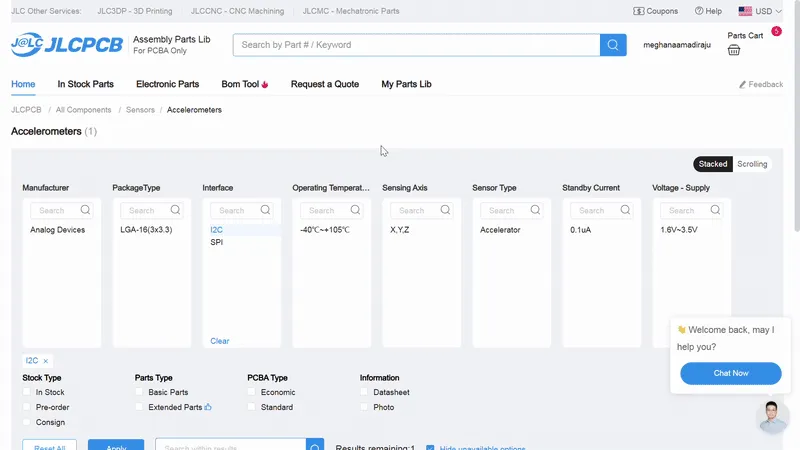
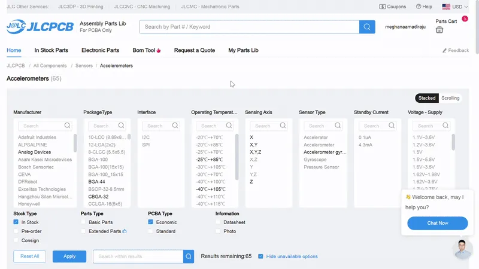
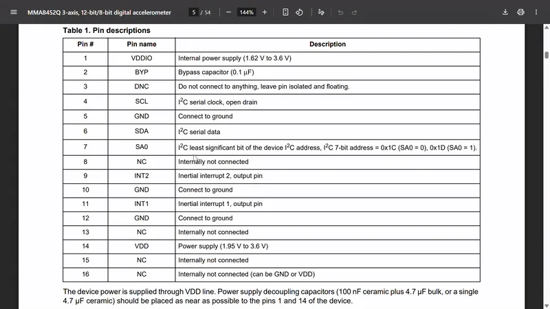

Before we start making our PCB, we've gotta choose a sensor to put on your board. For my Hermes board, I used a gyroscope so I could mount it on my bike and see how smooth my biking is. You can choose from hundreds of different types of sensors to fit what you wanna do with your Hermes!
Visit JLCPCB.com/parts and search for sensors. You could use a humidity sensor, light sensor (photoresistor), a touch sensor, or even a Geiger counter (which tracks radiation)! The possibilities are endless.


When you're browsing for sensors, you'll see a lot of filters. We don't care about most of these (mostly because they're inaccurate). We need only I2C sensors, but if you select that filter and there's only like 2 available sensors that show up, something's probably wrong. You can totally use them, especially if they're in stock and cheap, but most of the time they're not, so we'll have to do some manual digging.
I2C is a method of communication between electrical components. In this case, we're going to be communicating between a sensor and a microcontroller. You could communicate between a sensor and a sensor, a microcontroller and a microcontroller, or even both at the same time.
There's 2 main communication protocols we care about: SPI and I2C (pronounced eye-squared-see). SPI is older, more finicky, and uses more pins, so we're using I2C. SPI generally has 4 pins, MISO (Master In, Slave Out), MOSI (Master Out, Slave In), SCK (serial clock), and CS (chip select). These are data pins and you don't have to worry about them right now, but you should totally google around and find out some more.
I2C's pins are SDA and SCL. SDA is serial data (handles data transfer between components), and SCL is serial clock (handles timing of information). SCL is important cause information doesn't make any sense if you receive it out of order.
In the checkbox section below the filters, check the box for "Economic" PCBA type. Some soldering methods are harder to automate than others, so JLCPCB splits these parts into Economic and Standard. Economic can be like $5 and Standard can be like $200. So make sure that you're only using Economic components.
You should also filter to make sure it's In Stock, so check that box as well.


Now we have to make sure that the sensor supports I2C. Click your first result and open up its datasheet. A datasheet is a sheet about a components data (pretty self-explanatory.) If your results are super expensive (>$5), you can sort by price ascending.
In the component's datasheet, scroll down to the table of contents and ctrl-f search for "pin". Find the pinout or pin description, which is a table that tells you what each pin does and where to connect it to, which is SUPER COOL and SUPER CONVENIENT.
Make sure your pinout table has SDA and SCL pins. If it doesn't, then it doesn't support I2C. Some sensors have both SPI and I2C pins, and that's fine (we'll only be using the I2C ones).
You can also just ctrl-f I2C and see what pops up, but you'll need the pinout table anyway for your schematic.
Once you've found a sensor you like, has Economic PCBA, and supports I2C, you're set! I'm choosing the MPU-6500 because I've worked with MPUs before and it's expensive enough that it'll be good quality.

STOP! Before you continue any further, post the type of sensor you're using, what you're going to use it for, and a screenshot of the part you're using in the #pathfinder channel on the Hack Club slack. Your post should look something like this.